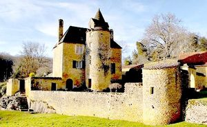
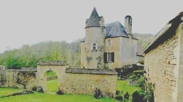
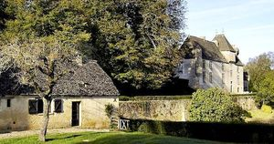
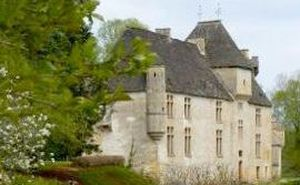
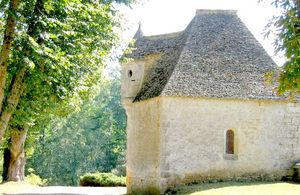
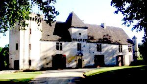
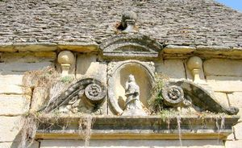
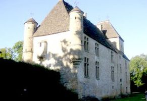
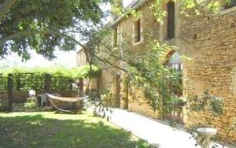

Recensement Jean-Claude Truffet
| Département | 24 — Dordogne |
| Canton | Sarlat la Canéda |
| Commune | Proissans |
| Type d'édifice | Manoir |
| Période d'origine | XV-XVI |
| Coordonnées GPS | 44° 56' 58,33" Nord, 1° 14' 10,95" Est. Langlade grav 9. Roussie grav 3-4-5-6-7 GPS : 44° 55' 14,3" Nord, 1° 15' 9,7" Est |









Plusieurs manoirs à Proissans, celui de Roussie, de Cluzeau et de Langlade du XVe siècle.
CLUZEAU du XVe et XVIe siècles, est un de ces nombreux petits manoirs qui ornent la campagne périgourdine. Ancien manoir des Sémignon du Rousset. Ce manoir comme le manoir de la Cypière, se trouve dans une combe perdue au milieu de nulle part. Il n'a aucune valeur historique mais une esthétique simple et harmonieuse. Son propriétaire est un brocanteur, manoir inscrit aux M.H. depuis le 7/12/1970 . Les éléments protégés du manoir sont l'enceinte, l'élévation et la toiture.
Manoir de LANGLADE du XVe siècle, inscrit au titre des M.H. depuis 1948.
ROUSSIE du XIV et XVe siècles, construction fortifiée appartenant aux Ferrières, co-seigneurs de Salignac. Devenu vers 1535 un manoir huguenot entre les mains de Guillaume du Peyret qui participe activement aux guerres de religion, il est incendié en 1575 sur ordre du maréchal de Montluc. En 1600, Raynaud de Goudins ayant épousé Jeanne du Peyret, reconstruit le corps du logis et l'entoure de communs formant une cour limitée par la chapelle et le chatelet d'entrée. Le château reste dans la famille pendant 200 ans. De 1800 à 1895, il appartient aux Viel-Castel qui le cèdent à leur cousin d'Heur des Ages. Sa fille épouse la même année le comte de Jaubert d'Ysseyrens, en 1926, leur fille cadette Henriette épouse le docteur de Blanchaud, mais elle meurt 10 ans plus tard. Pendant la guerre de 39-45, le château est inhabité, la résistance y installe une infirmerie. Aujourd'hui a la famille Blanchaud, inscrit au titre des M.H. depuis 1946.
CLUZEAU, manoir de plan rectangulaire à trois niveaux, toit en croupe, accolée en façade d'une tour ronde toit en poivrière avec deux lucarnes opposées. ROUSSIE, de plan rectangulaire, avec une façade sobre et harmonieuse longues de 32 mètres de long, recouverte d'une toiture en "lauses", à quatre niveaux, le châtelet d'entrée et son échaugette orientés N-O, les 2 échaugettes suspendues en encorbellement et les latrines du pignon ouest. De la reconstruction en 1600 datent: Le porche central où figure le blason des Goudins, En 1800 le comte de Jaubert d'Ysseyrens il démolit les bâtiments et la cour pour créer un parc et fait construire la tour carrée (1898), il installe, entre cette dernière et la chapelle, une véranda orangerie qui a disparu vers 1933. Le château a servi de décors pour le film récompensé "tout jamais" en frenchy. Le toit de lauzes est un des plus beau de la région. Aux travaux de la fin du XIXe siècle on doit la tour carrée ornée de créneaux ainsi que les vitraux, la conception et la naissance du parc qui ouvrira des perspectives nouvelles, mettant en valeur la chapelle et le pavillon d'entrée, la construction de nouveaux communs.
Famille de Raynaud de Goudins
"
A Proissans; Cluzeau grav 1-2 GPS : 44° 56' 58,33" Nord, 1° 14' 10,95" Est. Langlade grav 9. Roussie grav 3-4-5-6-7 GPS : 44° 55' 14,3" Nord, 1° 15' 9,7" Est